Attack&Defence Verification Automation
How is attack&defense simulation automation done?
Verify and control your Security and SOC teams 24/7.
This attack was previously blocked in this X product, how is it now?
How can I see the blocking and preventation status of t0 or new vulnerability in my products?
Isn’t enough our security products or the tens of millions of dollars we’ve spent?
…
Every day, new vulnerabilities are published, new attack types are detected and sometimes variants are changing, somewhere getting hacked and the above questions come to mind.
Consequently they don’t stop on 2 sides, they shouldn’t stop, they can’t stop!
Let’s start with basic parameters.
Everyone knows MITRE ATT&CK. While MITRE alone is not enough for security operations, it is the perfect and best framework. I will not talk about this any more because you can find thousands of documents on the internet.
What I explained above was a big problem for us as it is for every company and everyone. Although I do not like to talk about products, I think it will be useful to explain some technologies I use in this article.
SOAR(Security Orchestration, Automation and Response Platform):
XSOAR, formerly Demisto, is the best product I’ve seen in this area. There is a lot of talk about soar technology, but since it is not the purpose of this article, I will save it for later articles.
Links:
https://www.paloaltonetworks.com/cortex/xsoar
https://xsoar.pan.dev/
BAS(Continuous Breach and Attack Simulation):
PICUS is a product that is among the leaders in this topic. The only thing missing with customized attack scenario, and seems to have added in the last major patch they released this shortcoming.
Links: https://www.picussecurity.com/
For a secure structure, XDR-Network & Endpoint & Mail-, NDR, EP, IPS, SIEM, Sandbox etc. many products such as are required. (They should be used correctly and in the best way!) I took care to use almost all the technologies I have mentioned in this article.
Is it possible to keep up with this much product, technology and development?
It isn’t, especially in a world with human, budget and countless inadequacies!
So what should we do?
Of course, you have to develop automation about it
Goals:
I wanted to simulate continuous attacks between my peers (hosts), check and verify security controls and products, assess security maturity, score your defense mechanism, and automate this whole process from end to end.
Steps:
SOAR and BAS solution integration Playbook that include Manuel and automatic tasks Evaulate your defence maturity Automate your attack framework and simulate every time Lesson learn and increase your security maturity
Integration
To solve the above problems, I developed the integrations between picus and XSOAR product and created a playbook with automations and manual controls. The integration has been approved by Palo Alto and you can now actively use it on the XSOAR product.
To access the integration code outside of Palo Alto:
https://github.com/muratozfidan/XSOAR-PICUS/tree/main/PICUS/Integration
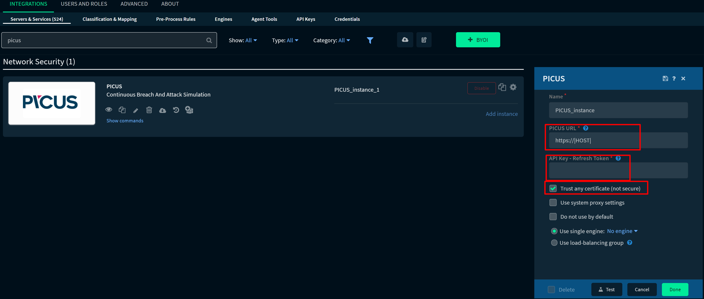
Enter the PICUS Management IP address in the IP part of the image. You can complete the integration by entering the API Token that it has produced in the following order on PICUS. If you do not have an SSL certificate on PICUS Management, you can check the “Trust any certificate” option. (Suggestion)
For create API Token:
http(s)://YourPICUSURL/settings ==> Advanced ==> Create API TOKEN
This integration includes 12 basic commands that will be useful in automations. For Example: Picus-single-attack: You can run a attack between specific peer with this command. Picus-specific-threats-results: You can get an attack results with this command.
Playbook:
Now we can go into our playbook details.
Link: https://github.com/muratozfidan/XSOAR-PICUS/tree/main/PICUS/Playbook

Playbook is based on 6 basic categories.
- Preparation
- Attack(Weaponization)
- Analysis
- Preventation
- Detection
- Mitigation&Remedition
I know that there is no respond from incident response stages, but the purpose in this playbook is to measure awareness with automation and increase maturity.
1.Preparation
You must first determine the attack you will play, decide between which peers (called as vector) you will play it, and have the technical details of the attack to use in the analysis phase. The attack you will play in this phase may be a newly published vulnerability in the exploit code, malware or a technique that hits the MITRE mapping. No matter what(red or blue team) you must know all the vectors of the attack. (Knowledge is everything!)
Note: Network segmentation is important! (What network layers and security products will the attack take place?)
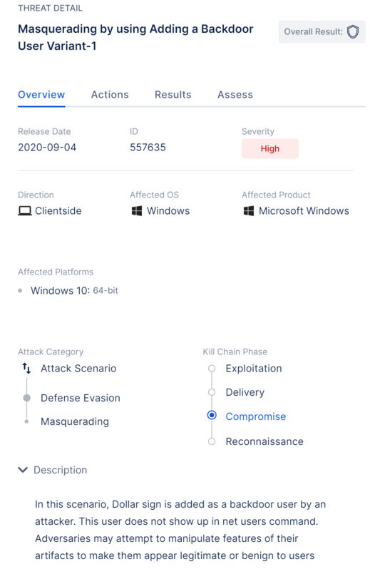
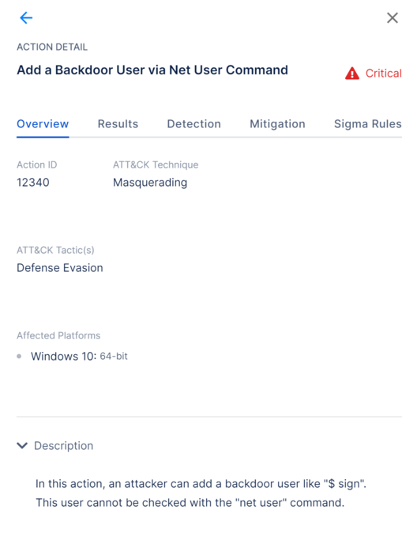
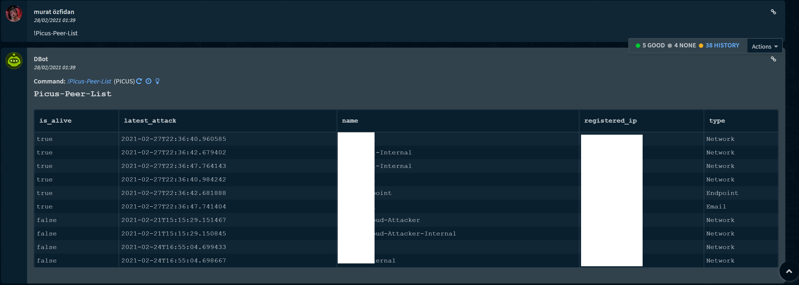
2.Attack(Weaponization)
You can initiate the attack you selected in the previous flow for all vectors you previously specified (created) or a custom vector. (schedule)
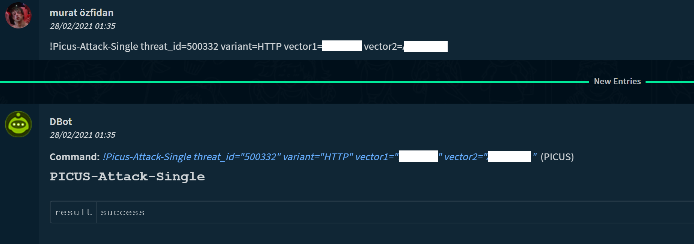
3.Analysis
At this stage, you should get the results of the attack, check whether there is an existing SIGMA and YARA rule (if not, start creating immediately!) And investigate the necessary security measures or you can get them from PICUS(Automatic).
For SIGMA Rule Standards:
https://www.nextron-systems.com/2018/02/10/write-sigma-rules/
For YARA Rule Standards: https://yara.readthedocs.io/en/latest/writingrules.html
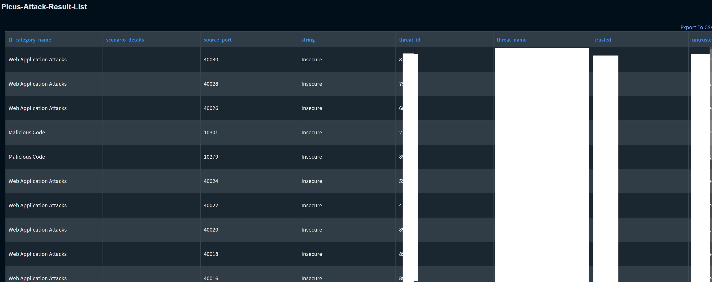
4.Preventation
In this phase, you must detect which security products the attack has passed (failed) (PICUS automatically gives these results) and start the relevant flow to edit the necessary signatures and configurations, if exists. It is not a success to prevent an attack in a single security product, It indicates that the relevant security product is doing the job (not others) but it does not mean that the security measures are sufficient. That’s why you should try every attack in all network segments as much as possible.
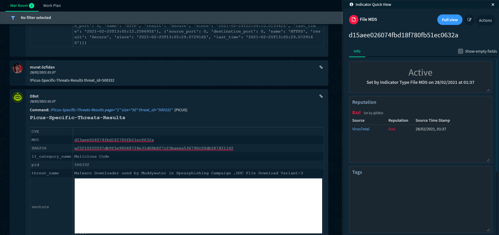
5.Detection
Whether an attack has passed or not will not be enough for someone who considers every step of security. Therefore, you should examine the logs of the attack, check that an alarm was triggered from the logs, and if they do not exist, start the defence process. (Another flow) If you have detected it, you should examine variants of these and similar attacks and start threat hunting!
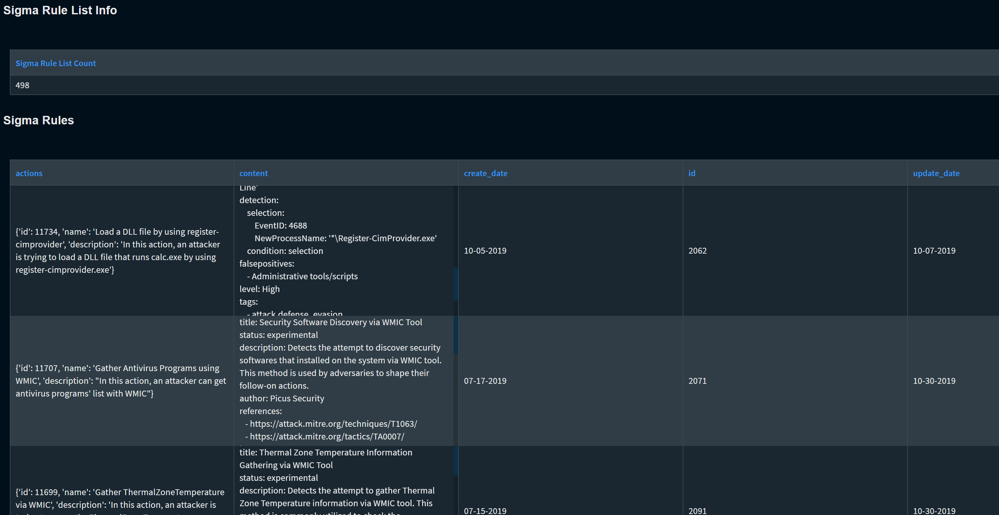
6.Mitigation&Remedition
At the last stage, you should start configuring the results of the attack. You can use your own problem and project tracking software for this. In SIEM, you can create a warning about this and have the Hunters take care of it.
Finally you have to evaluate and score your security maturity. The following project(DeTTECT) on how to do this can be a good reference for you.
https://github.com/rabobank-cdc/DeTTECT
https://mitre-attack.github.io/attack-navigator/
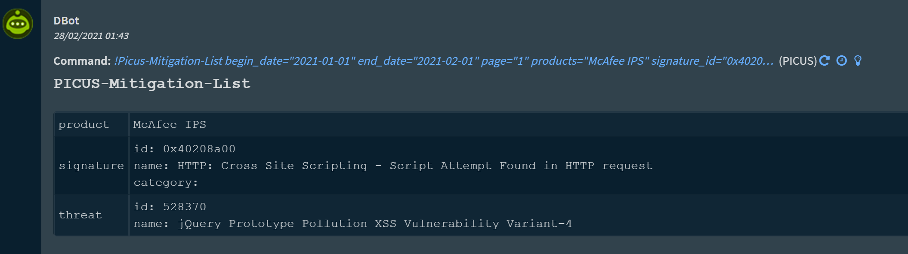
Jira Task:
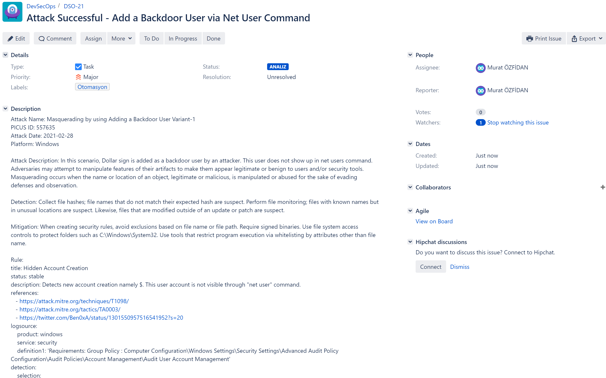
MITRE Navigator:
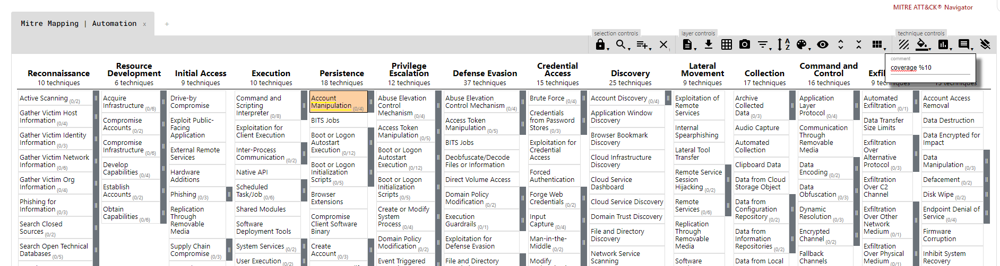
Consequence:
There are tens, maybe hundreds of technical details to talk about on this subject. The main purpose of this article was to automate what we do manually in security processes and show how best practices can be applied in real life.
If you want to set up your own lab environment as an alternative(free) to the technologies I used in the article:
- SIEM:
- ELK
- Splunk
- Attack Tool:
- Atomic Red Team
- Calderra
- Mordor Project
- SOAR:
- XSOAR
- Hive
Of course, my suggestion for those who want to go deeper: Set 6 servers, the first is in the external system (1), the second is in the DMZ (1), the third is in the Server segment (2) and the fourth is in the Client segment (2). suggested vectors:
- External - DMZ
- External - Internal Server
- Server - Server
- Client - Server
- Client - Client
Complete the sysmon and auditd configuration on all servers. Position ELK or Splunk (Internal). Of course, Zeek Create your attacks. Write your automation code!
Also, if you want to improve your MITRE skills, you can take a look at the training offered by PICUS academy.
References:
https://github.com/muratozfidan/XSOAR-PICUS/tree/main/PICUS/Integration
https://www.paloaltonetworks.com/cortex/xsoar
https://www.picussecurity.com/
https://www.nextron-systems.com/2018/02/10/write-sigma-rules/
https://yara.readthedocs.io/en/latest/writingrules.html
https://github.com/rabobank-cdc/DeTTECT
https://mitre-attack.github.io/attack-navigator/
https://attack.mitre.org/
https://thehive-project.org/
https://atomicredteam.io/
https://github.com/redcanaryco/atomic-red-team
https://github.com/mitre/caldera
https://mordordatasets.com/introduction.html
https://github.com/OTRF/mordor